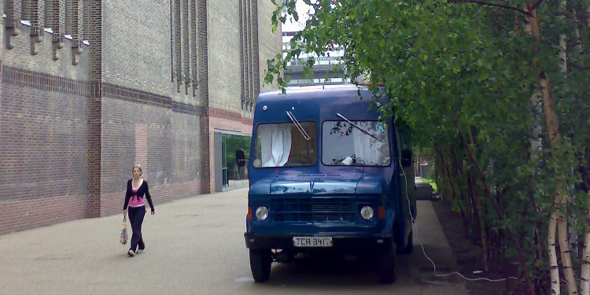

History
Living and working off-grid has it's perks and hardships. Freedoms are always hard fought easily lost.. Maintaining a van on top of life's other distractions and difficulties has meant that Eileen Ford Has been stationary for a long while - don't worry the sorn document has been posted!
Please post your historical story or questions to eileenford@deptfordcreek.net